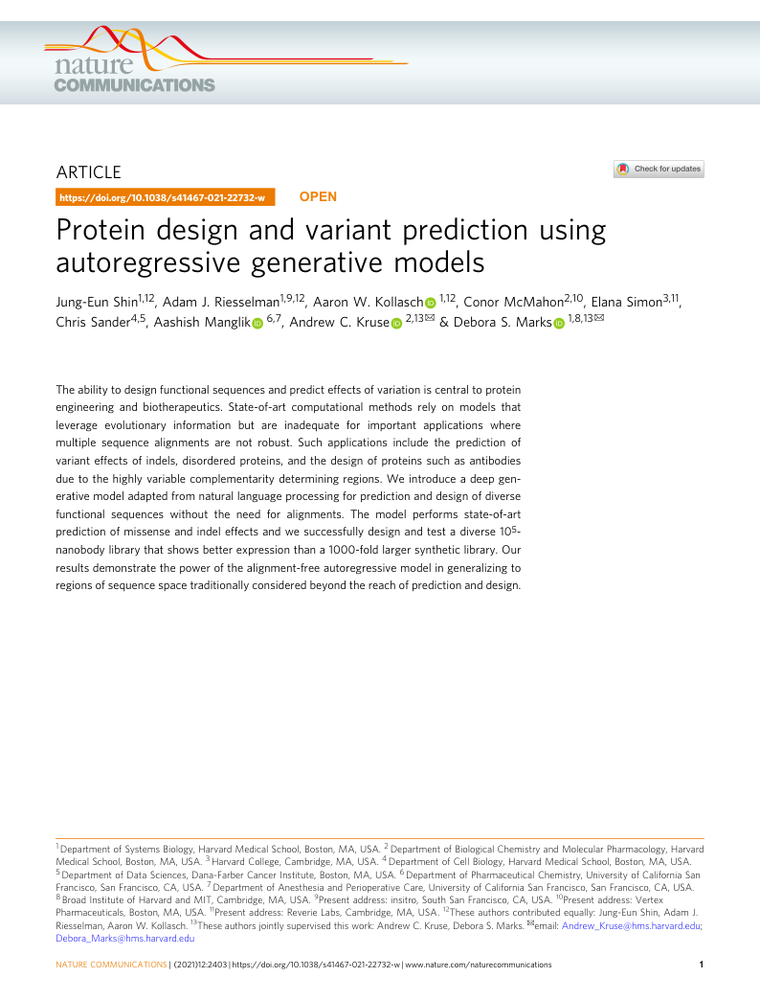
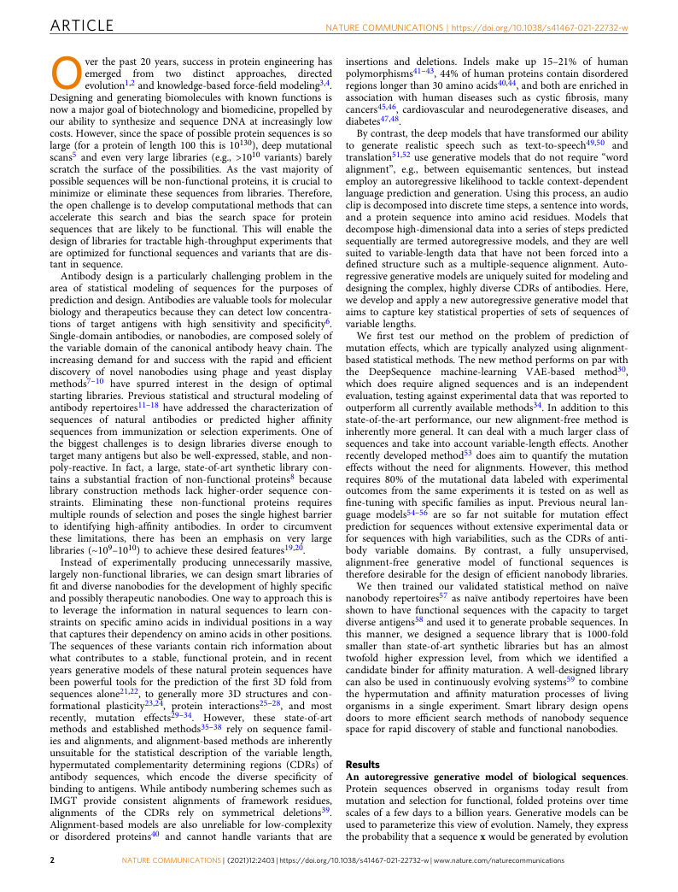
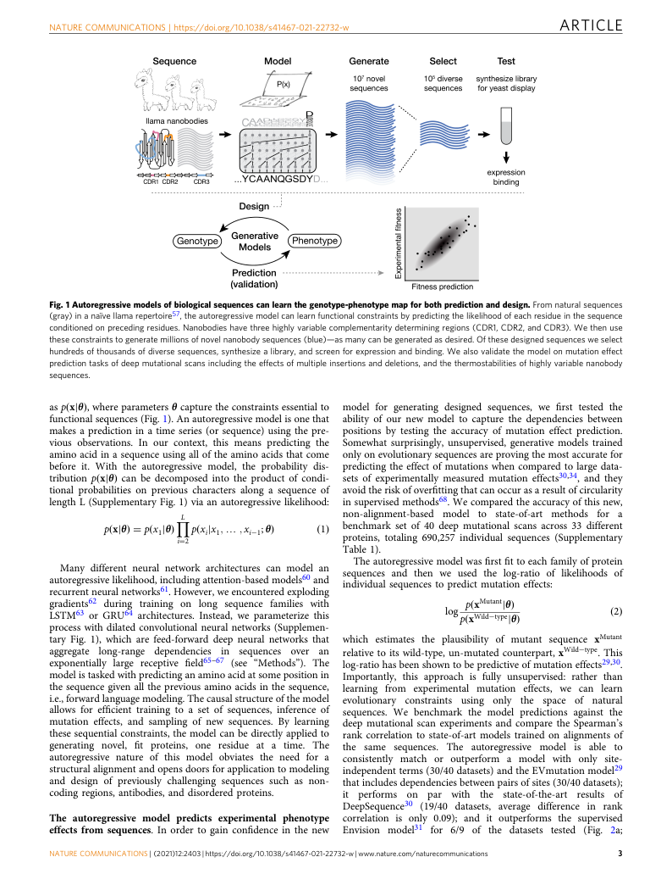
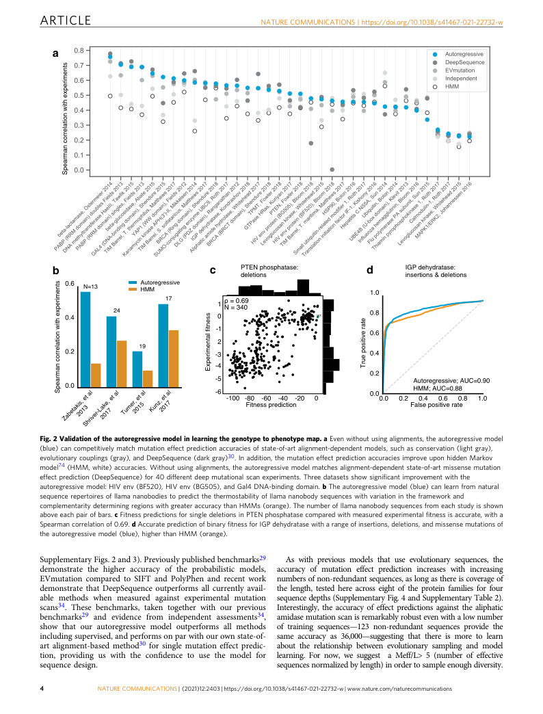
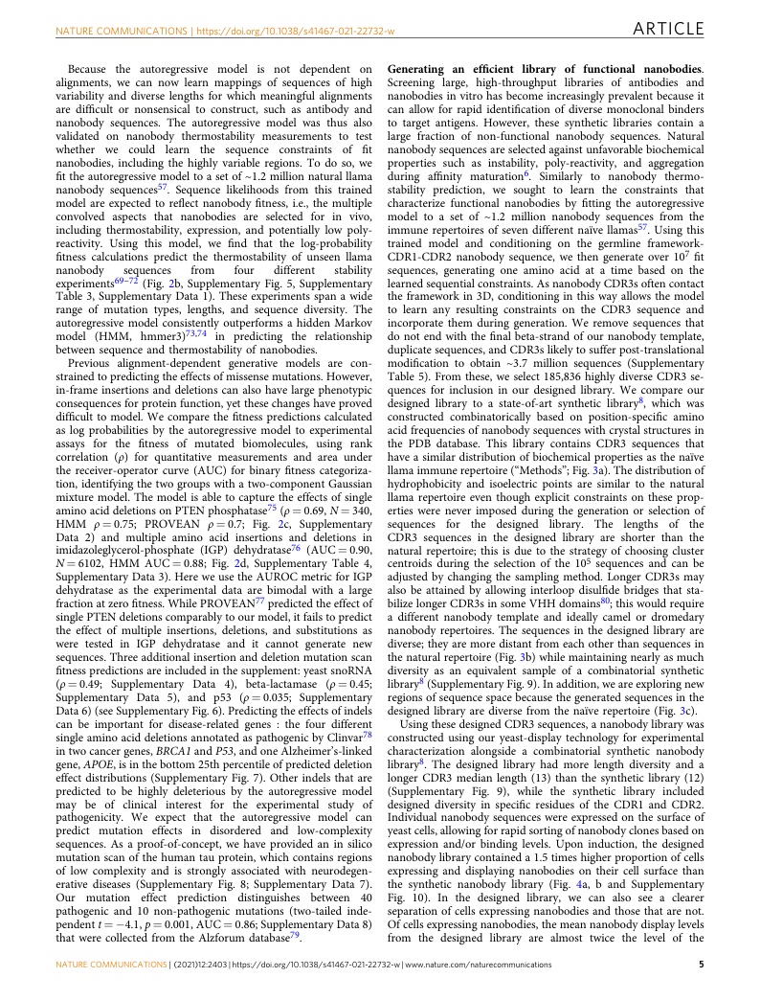
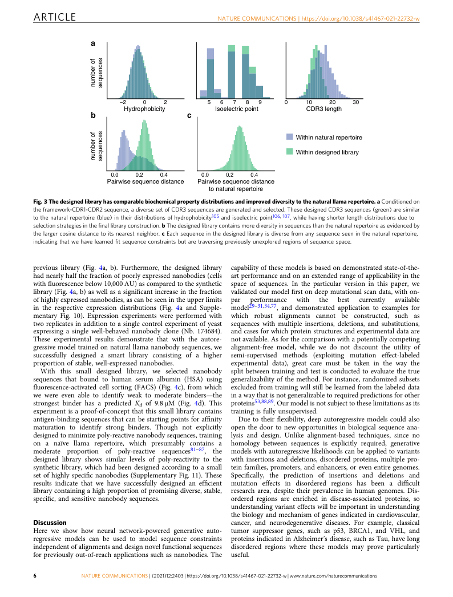
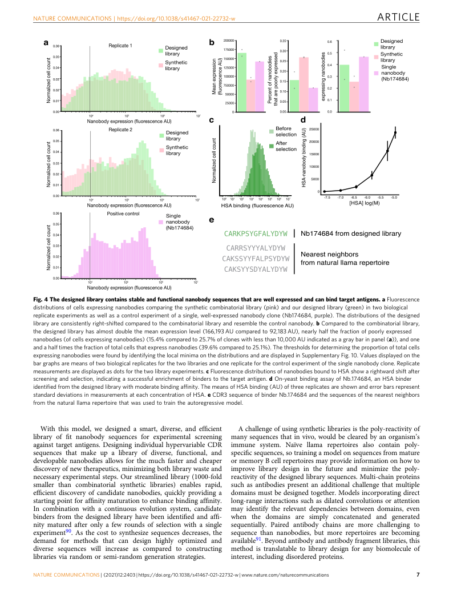
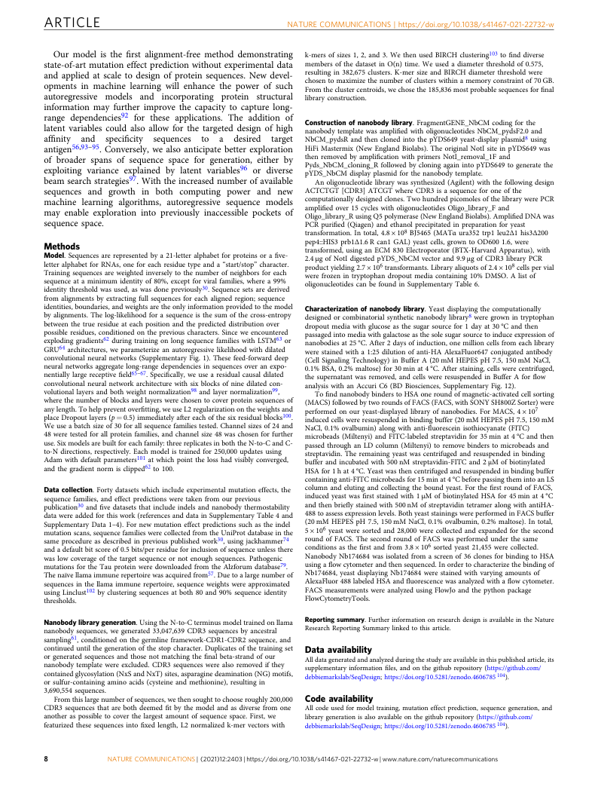
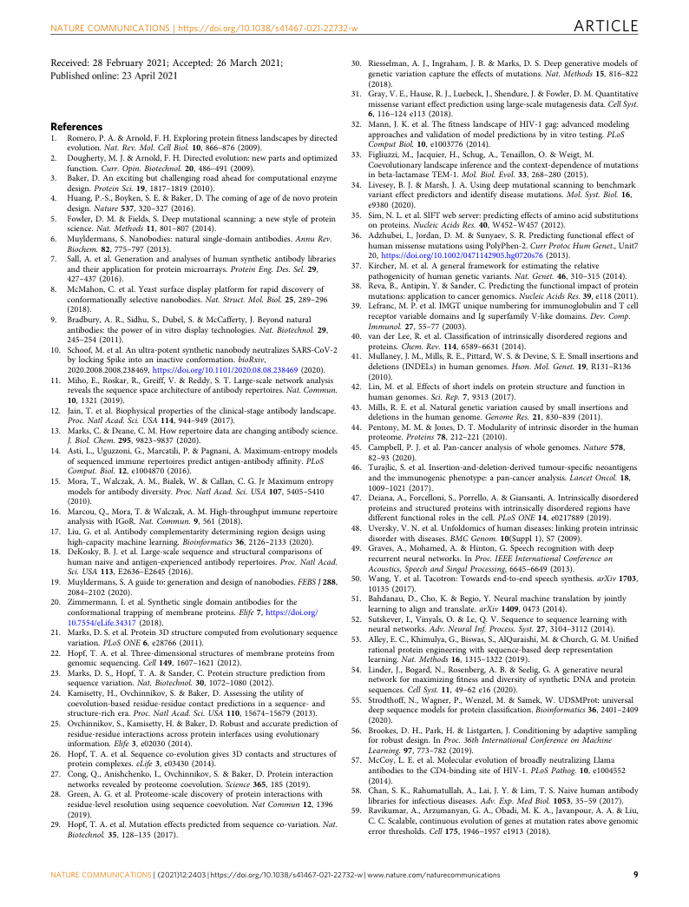
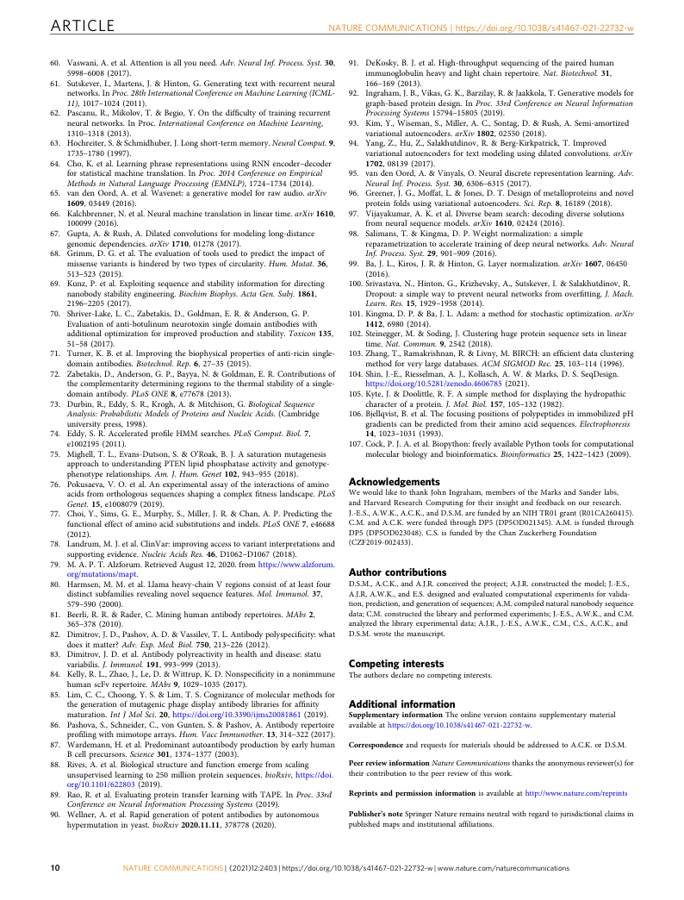

Adaptive Research Modeling · 2026

ARTICLE OPEN https://doi.org/10.1038/s41467-021-22732-w Protein design and variant prediction using
autoregressive generative models
Jung-Eun Shin1,12, Adam J. Riesselman1,9,12, Aaron W. Kollasch 1,12, Conor McMahon2,10, Elana Simon3,11, ✉ ✉ Chris Sander4,5, Aashish Manglik 6,7, Andrew C. Kruse 2,13 & Debora S. Marks 1,8,13
Theabilitytodesignfunctionalsequencesandpredicteffectsofvariationiscentraltoprotein engineering and biotherapeutics. State-of-art computational methods rely on models that leverage evolutionary information but are inadequate for important applications where multiple sequence alignments are not robust. Such applications include the prediction of variant effects of indels, disordered proteins, and the design of proteins such as antibodies due to the highly variable complementarity determining regions. We introduce a deep gen-
erativemodeladaptedfromnaturallanguageprocessingforpredictionanddesignofdiverse functional sequences without the need for alignments. The model performs state-of-art prediction of missense and indel effects and we successfully design and test a diverse 105- nanobodylibrarythatshowsbetterexpressionthana1000-foldlargersyntheticlibrary.Our resultsdemonstratethepowerofthealignment-freeautoregressivemodelingeneralizingto regionsofsequencespacetraditionallyconsideredbeyondthereachofpredictionanddesign.
1DepartmentofSystemsBiology,HarvardMedicalSchool,Boston,MA,USA.2DepartmentofBiologicalChemistryandMolecularPharmacology,Harvard MedicalSchool,Boston,MA,USA.3HarvardCollege,Cambridge,MA,USA.4DepartmentofCellBiology,HarvardMedicalSchool,Boston,MA,USA. 5DepartmentofDataSciences,Dana-FarberCancerInstitute,Boston,MA,USA.6DepartmentofPharmaceuticalChemistry,UniversityofCaliforniaSan Francisco,SanFrancisco,CA,USA.7DepartmentofAnesthesiaandPerioperativeCare,UniversityofCaliforniaSanFrancisco,SanFrancisco,CA,USA. 8BroadInstituteofHarvardandMIT,Cambridge,MA,USA.9Presentaddress:insitro,SouthSanFrancisco,CA,USA.10Presentaddress:Vertex Pharmaceuticals,Boston,MA,USA.11Presentaddress:ReverieLabs,Cambridge,MA,USA.12Theseauthorscontributedequally:Jung-EunShin,AdamJ. ✉ Riesselman,AaronW.Kollasch.13Theseauthorsjointlysupervisedthiswork:AndrewC.Kruse,DeboraS.Marks. email:Andrew_Kruse@hms.harvard.edu; Debora_Marks@hms.harvard.edu NATURECOMMUNICATIONS| (2021) 12:2403 |https://doi.org/10.1038/s41467-021-22732-w|www.nature.com/naturecommunications 1 ;,:)(0987654321

ARTICLE NATURECOMMUNICATIONS|https://doi.org/10.1038/s41467-021-22732-w O ver the past 20 years, success in protein engineering has insertions and deletions. Indels make up 15–21% of human emerged from two distinct approaches, directed polymorphisms41–43, 44% of human proteins contain disordered evolution1,2andknowledge-basedforce-fieldmodeling3,4. regionslongerthan30aminoacids40,44,andbothareenrichedin Designing and generating biomolecules with known functions is association with human diseases such as cystic fibrosis, many nowamajorgoalofbiotechnologyandbiomedicine,propelledby cancers45,46, cardiovascular and neurodegenerative diseases, and our ability to synthesize and sequence DNA at increasingly low diabetes47,48. costs.However,sincethespaceofpossibleproteinsequencesisso Bycontrast,thedeepmodelsthathavetransformedourability large (for a protein of length 100 this is 10130), deep mutational to generate realistic speech such as text-to-speech49,50 and scans5 and even very large libraries (e.g., >1010 variants) barely translation51,52 use generative models that do not require “word scratch the surface of the possibilities. As the vast majority of alignment”, e.g., between equisemantic sentences, but instead possiblesequenceswillbenon-functionalproteins,itiscrucialto employ an autoregressive likelihood to tackle context-dependent minimize or eliminate these sequences from libraries. Therefore, languagepredictionandgeneration.Usingthisprocess,anaudio theopenchallengeistodevelopcomputationalmethodsthatcan clipisdecomposedintodiscretetimesteps,asentenceintowords, accelerate this search and bias the search space for protein and a protein sequence into amino acid residues. Models that sequences that are likely to be functional. This will enable the decomposehigh-dimensionaldataintoaseriesofstepspredicted designoflibrariesfortractablehigh-throughputexperimentsthat sequentially are termed autoregressive models, and they are well are optimized for functional sequences and variants that are dis- suited to variable-length data that have not been forced into a tant in sequence. defined structure such as a multiple-sequence alignment. Auto- Antibody design is a particularly challenging problem in the regressivegenerativemodelsareuniquelysuitedformodelingand area of statistical modeling of sequences for the purposes of designing the complex, highly diverse CDRs of antibodies. Here, predictionanddesign.Antibodiesarevaluabletoolsformolecular wedevelopandapplyanewautoregressivegenerativemodelthat biology and therapeutics because they can detect low concentra- aims to capture key statistical properties of sets of sequences of tions of target antigens with high sensitivity and specificity6. variable lengths. Single-domainantibodies,ornanobodies,arecomposedsolelyof We first test our method on the problem of prediction of the variable domain of the canonical antibody heavy chain. The mutation effects, which are typically analyzed using alignment- increasing demand for and success with the rapid and efficient basedstatisticalmethods.Thenewmethodperformsonparwith discovery of novel nanobodies using phage and yeast display the DeepSequence machine-learning VAE-based method30, methods7–10 have spurred interest in the design of optimal which does require aligned sequences and is an independent starting libraries. Previous statistical and structural modeling of evaluation,testingagainstexperimentaldatathatwasreportedto antibody repertoires11–18 have addressed the characterization of outperform all currently available methods34. In addition to this sequences of natural antibodies or predicted higher affinity state-of-the-art performance, our new alignment-free method is sequences from immunization or selection experiments. One of inherently more general. It can deal with a much larger class of the biggest challenges is to design libraries diverse enough to sequences and take into account variable-length effects. Another targetmanyantigensbutalsobewell-expressed,stable,andnon- recently developed method53 does aim to quantify the mutation poly-reactive. In fact, a large, state-of-art synthetic library con- effects without the need for alignments. However, this method tains a substantial fraction of non-functional proteins8 because requires 80% of the mutational data labeled with experimental library construction methods lack higher-order sequence con- outcomes from the same experiments it is tested on as well as straints. Eliminating these non-functional proteins requires fine-tuning with specific families as input. Previous neural lan- multiple rounds of selection and poses the single highest barrier guage models54–56 are so far not suitable for mutation effect to identifying high-affinity antibodies. In order to circumvent prediction for sequences without extensive experimental data or these limitations, there has been an emphasis on very large for sequences with high variabilities, such as the CDRs of anti- libraries (~109–1010) to achieve these desired features19,20. body variable domains. By contrast, a fully unsupervised, Instead of experimentally producing unnecessarily massive, alignment-free generative model of functional sequences is largely non-functional libraries, we can design smart libraries of therefore desirable for the design of efficient nanobody libraries. fitanddiversenanobodiesforthedevelopmentofhighlyspecific We then trained our validated statistical method on naïve andpossiblytherapeuticnanobodies.Onewaytoapproachthisis nanobody repertoires57 as naïve antibody repertoires have been to leverage the information in natural sequences to learn con- shown to have functional sequences with the capacity to target straints on specific amino acids in individual positions in a way diverseantigens58andusedittogenerateprobablesequences.In thatcapturestheirdependencyonaminoacidsinotherpositions. this manner, we designed a sequence library that is 1000-fold The sequences of these variants contain rich information about smaller than state-of-art synthetic libraries but has an almost what contributes to a stable, functional protein, and in recent twofold higher expression level, from which we identified a years generative models of these natural protein sequences have candidate binder for affinity maturation. A well-designed library been powerful tools for the prediction of the first 3D fold from can also be used in continuously evolving systems59 to combine sequences alone21,22, to generally more 3D structures and con- the hypermutation and affinity maturation processes of living formational plasticity23,24, protein interactions25–28, and most organisms in a single experiment. Smart library design opens recently, mutation effects29–34. However, these state-of-art doors to more efficient search methods of nanobody sequence methods and established methods35–38 rely on sequence famil- space for rapid discovery of stable and functional nanobodies. iesand alignments, and alignment-basedmethodsareinherently unsuitable for the statistical description of the variable length, hypermutated complementarity determining regions (CDRs) of Results antibody sequences, which encode the diverse specificity of An autoregressive generative model of biological sequences. bindingtoantigens.Whileantibodynumberingschemessuchas Protein sequences observed in organisms today result from IMGT provide consistent alignments of framework residues, mutation and selection for functional, folded proteins over time alignments of the CDRs rely on symmetrical deletions39. scales of a few days to a billion years. Generative models can be Alignment-based models are also unreliable for low-complexity usedtoparameterizethisviewofevolution.Namely,theyexpress or disordered proteins40 and cannot handle variants that are theprobabilitythatasequencexwouldbegeneratedbyevolution 2 NATURECOMMUNICATIONS| (2021) 12:2403 |https://doi.org/10.1038/s41467-021-22732-w|www.nature.com/naturecommunications

ARTICLE NATURECOMMUNICATIONS|https://doi.org/10.1038/s41467-021-22732-w
Fig.1Autoregressivemodelsofbiologicalsequencescanlearnthegenotype-phenotypemapforbothpredictionanddesign.Fromnaturalsequences (gray)inanaïvellamarepertoire57,theautoregressivemodelcanlearnfunctionalconstraintsbypredictingthelikelihoodofeachresidueinthesequence conditionedonprecedingresidues.Nanobodieshavethreehighlyvariablecomplementaritydeterminingregions(CDR1,CDR2,andCDR3).Wethenuse theseconstraintstogeneratemillionsofnovelnanobodysequences(blue)—asmanycanbegeneratedasdesired.Ofthesedesignedsequencesweselect hundredsofthousandsofdiversesequences,synthesizealibrary,andscreenforexpressionandbinding.Wealsovalidatethemodelonmutationeffect predictiontasksofdeepmutationalscansincludingtheeffectsofmultipleinsertionsanddeletions,andthethermostabilitiesofhighlyvariablenanobody sequences. aspðxjθÞ,whereparametersθcapturetheconstraintsessentialto model for generating designed sequences, we first tested the functionalsequences(Fig.1).Anautoregressivemodelisonethat ability of our new model to capture the dependencies between makes a prediction in a time series (or sequence) using the pre- positions by testing the accuracy of mutation effect prediction. vious observations. In our context, this means predicting the Somewhat surprisingly, unsupervised, generative models trained aminoacid in a sequence using allof theamino acidsthatcome onlyonevolutionarysequencesareprovingthemostaccuratefor before it. With the autoregressive model, the probability dis- predicting the effect of mutations when compared to large data- tribution pðxjθÞ can be decomposed into the product of condi- sets of experimentally measured mutation effects30,34, and they tional probabilities on previous characters along a sequence of avoidtheriskofoverfittingthatcanoccurasaresultofcircularity length L (Supplementary Fig. 1) via an autoregressive likelihood: insupervisedmethods68.Wecomparedtheaccuracyofthisnew, YL non-alignment-based model to state-of-art methods for a pðxjθÞ¼pðx 1 jθÞ pðx i jx 1 ; ¼;x i(cid:2)1 ;θÞ ð1Þ benchmark set of 40 deep mutational scans across 33 different i¼2 proteins, totaling 690,257 individual sequences (Supplementary Table 1). Theautoregressivemodelwasfirstfittoeachfamilyofprotein Many different neural network architectures can model an sequences and then we used the log-ratio of likelihoods of autoregressivelikelihood,includingattention-basedmodels60and individual sequences to predict mutation effects: recurrentneuralnetworks61.However,weencounteredexploding gradients62 during training on long sequence families with pðxMutantjθÞ LSTM63 or GRU64 architectures. Instead, we parameterize this log pðxWild(cid:2)typejθÞ ð2Þ process with dilated convolutional neural networks (Supplemen- tary Fig. 1), which are feed-forward deep neural networks that which estimates the plausibility of mutant sequence xMutant aggregate long-range dependencies in sequences over an relative to its wild-type, un-mutated counterpart, xWild(cid:2)type. This exponentially large receptive field65–67 (see “Methods”). The log-ratiohasbeenshowntobepredictiveofmutationeffects29,30. modelistaskedwithpredictinganaminoacidatsomepositionin Importantly, this approach is fully unsupervised: rather than the sequence given all the previous amino acids in the sequence, learning from experimental mutation effects, we can learn i.e.,forwardlanguagemodeling.Thecausalstructureofthemodel evolutionary constraints using only the space of natural allows for efficient training to a set of sequences, inference of sequences. We benchmark the model predictions against the mutation effects, and sampling of new sequences. By learning deep mutational scan experiments and compare the Spearman’s thesesequentialconstraints,themodelcanbedirectlyappliedto rank correlation to state-of-art models trained on alignments of generating novel, fit proteins, one residue at a time. The the same sequences. The autoregressive model is able to autoregressive nature of this model obviates the need for a consistently match or outperform a model with only site- structuralalignmentandopensdoorsforapplicationtomodeling independentterms(30/40datasets)andtheEVmutationmodel29 and design of previously challenging sequences such as non- thatincludesdependenciesbetweenpairsofsites(30/40datasets); coding regions, antibodies, and disordered proteins. it performs on par with the state-of-the-art results of DeepSequence30 (19/40 datasets, average difference in rank The autoregressive model predicts experimental phenotype correlation is only 0.09); and it outperforms the supervised effects from sequences. In order to gain confidence in the new Envision model31 for 6/9 of the datasets tested (Fig. 2a; NATURECOMMUNICATIONS| (2021) 12:2403 |https://doi.org/10.1038/s41467-021-22732-w|www.nature.com/naturecommunications 3

PTEN phosphatase: deletions
Fitness prediction
SupplementaryFigs.2and3).Previouslypublishedbenchmarks29 As with previous models that use evolutionary sequences, the demonstrate the higher accuracy of the probabilistic models, accuracy of mutation effect prediction increases with increasing EVmutation compared to SIFT and PolyPhen and recent work numbersofnon-redundantsequences,aslongasthereiscoverageof demonstrate that DeepSequence outperforms all currently avail- the length, tested here across eight of the protein families for four able methods when measured against experimental mutation sequencedepths(SupplementaryFig.4andSupplementaryTable2). scans34. These benchmarks, taken together with our previous Interestingly, the accuracy of effect predictions against the aliphatic benchmarks29 and evidence from independent assessments34, amidasemutationscanisremarkablyrobustevenwithalownumber show that our autoregressive model outperforms all methods of training sequences—123 non-redundant sequences provide the includingsupervised,andperformsonparwithourownstate-of- same accuracy as 36,000—suggesting that there is more to learn art alignment-based method30 for single mutation effect predic- about the relationship between evolutionary sampling and model tion, providing us with the confidence to use the model for learning. For now, we suggest a Meff/L> 5 (number of effective sequence design. sequencesnormalizedbylength)inordertosampleenoughdiversity. ssentif latnemirepxE c d IGP dehydratase: insertions & deletions Autoregressive HMM stnemirepxe htiw noitalerroc namraepS b Zabetakis, e S t h a ri l ver-Lake, et al Turner, et al Kunz, et al False positive rate etar evitisop eurT WT stnemirepxe htiw noitalerroc namraepS ARTICLE NATURECOMMUNICATIONS|https://doi.org/10.1038/s41467-021-22732-w Fig.2Validationoftheautoregressivemodelinlearningthegenotypetophenotypemap.aEvenwithoutusingalignments,theautoregressivemodel (blue)cancompetitivelymatchmutationeffectpredictionaccuraciesofstate-of-artalignment-dependentmodels,suchasconservation(lightgray), evolutionarycouplings(gray),andDeepSequence(darkgray)30.Inaddition,themutationeffectpredictionaccuraciesimproveuponhiddenMarkov model74(HMM,white)accuracies.Withoutusingalignments,theautoregressivemodelmatchesalignment-dependentstate-of-artmissensemutation effectprediction(DeepSequence)for40differentdeepmutationalscanexperiments.Threedatasetsshowsignificantimprovementwiththe autoregressivemodel:HIVenv(BF520),HIVenv(BG505),andGal4DNA-bindingdomain.bTheautoregressivemodel(blue)canlearnfromnatural sequencerepertoiresofllamananobodiestopredictthethermostabilityofllamananobodysequenceswithvariationintheframeworkand complementaritydeterminingregionswithgreateraccuracythanHMMs(orange).Thenumberofllamananobodysequencesfromeachstudyisshown aboveeachpairofbars.cFitnesspredictionsforsingledeletionsinPTENphosphatasecomparedwithmeasuredexperimentalfitnessisaccurate,witha Spearmancorrelationof0.69.dAccuratepredictionofbinaryfitnessforIGPdehydratasewitharangeofinsertions,deletions,andmissensemutationsof theautoregressivemodel(blue),higherthanHMM(orange). 4 NATURECOMMUNICATIONS| (2021) 12:2403 |https://doi.org/10.1038/s41467-021-22732-w|www.nature.com/naturecommunications

ARTICLE NATURECOMMUNICATIONS|https://doi.org/10.1038/s41467-021-22732-w
Because the autoregressive model is not dependent on Generating an efficient library of functional nanobodies. alignments, we can now learn mappings of sequences of high Screening large, high-throughput libraries of antibodies and variability and diverse lengths for which meaningful alignments nanobodiesinvitrohasbecomeincreasinglyprevalentbecauseit are difficult or nonsensical to construct, such as antibody and can allow for rapid identification of diverse monoclonal binders nanobody sequences. The autoregressive model was thus also to target antigens. However, these synthetic libraries contain a validated on nanobody thermostability measurements to test large fraction of non-functional nanobody sequences. Natural whether we could learn the sequence constraints of fit nanobodysequencesareselectedagainstunfavorablebiochemical nanobodies, including the highly variable regions. To do so, we properties such as instability, poly-reactivity, and aggregation fittheautoregressivemodeltoasetof~1.2millionnaturalllama during affinity maturation6. Similarly to nanobody thermo- nanobody sequences57. Sequence likelihoods from this trained stability prediction, we sought to learn the constraints that model are expected to reflect nanobody fitness, i.e., the multiple characterize functional nanobodies by fitting the autoregressive convolved aspects that nanobodies are selected for in vivo, model to a set of ~1.2 million nanobody sequences from the including thermostability, expression, and potentially low poly- immune repertoires of seven different naïve llamas57. Using this reactivity. Using this model, we find that the log-probability trained model and conditioning on the germline framework- fitness calculations predict the thermostability of unseen llama CDR1-CDR2 nanobody sequence, we then generate over 107 fit nanobody sequences from four different stability sequences, generating one amino acid at a time based on the experiments69–72 (Fig. 2b, Supplementary Fig. 5, Supplementary learnedsequentialconstraints.AsnanobodyCDR3softencontact Table 3, Supplementary Data 1). These experiments span a wide the framework in 3D, conditioning in this way allows the model range of mutation types, lengths, and sequence diversity. The to learn any resulting constraints on the CDR3 sequence and autoregressive model consistently outperforms a hidden Markov incorporate them during generation. We remove sequences that model (HMM, hmmer3)73,74 in predicting the relationship do not end with the final beta-strand of our nanobody template, between sequence and thermostability of nanobodies. duplicatesequences,andCDR3slikelytosufferpost-translational Previous alignment-dependent generative models are con- modification to obtain ~3.7 million sequences (Supplementary strainedtopredictingtheeffectsofmissensemutations.However, Table 5). From these, we select 185,836 highly diverse CDR3 se- in-frame insertions and deletions can also have large phenotypic quences for inclusion in our designed library. We compare our consequencesforproteinfunction,yetthesechangeshaveproved designed library to a state-of-art synthetic library8, which was difficult to model. We compare the fitness predictions calculated constructed combinatorically based on position-specific amino as log probabilities by the autoregressive model to experimental acidfrequenciesofnanobodysequenceswithcrystalstructuresin assays for the fitness of mutated biomolecules, using rank the PDB database. This library contains CDR3 sequences that correlation (ρ) for quantitative measurements and area under haveasimilardistributionofbiochemicalpropertiesasthenaïve the receiver-operator curve (AUC) for binary fitness categoriza- llamaimmunerepertoire(“Methods”;Fig.3a).Thedistributionof tion,identifyingthetwogroupswithatwo-componentGaussian hydrophobicity and isoelectric points are similar to the natural mixturemodel.Themodel isableto capturetheeffects ofsingle llama repertoire even though explicit constraints on these prop- aminoaciddeletionsonPTENphosphatase75(ρ=0.69,N=340, erties were never imposed during the generation or selection of HMM ρ=0.75; PROVEAN ρ=0.7; Fig. 2c, Supplementary sequences for the designed library. The lengths of the Data 2) and multiple amino acid insertions and deletions in CDR3 sequences in the designed library are shorter than the imidazoleglycerol-phosphate (IGP) dehydratase76 (AUC=0.90, natural repertoire; this is due to the strategy of choosing cluster N=6102, HMM AUC=0.88; Fig. 2d, Supplementary Table 4, centroids during the selection of the 105 sequences and can be SupplementaryData3).HereweusetheAUROCmetricforIGP adjusted by changing the sampling method. Longer CDR3s may dehydratase as the experimental data are bimodal with a large also be attained by allowing interloop disulfide bridges that sta- fractionatzerofitness.WhilePROVEAN77predictedtheeffectof bilizelongerCDR3sinsomeVHHdomains80;thiswouldrequire singlePTENdeletionscomparablytoourmodel,itfailstopredict a different nanobody template and ideally camel or dromedary the effect of multiple insertions, deletions, and substitutions as nanobody repertoires. The sequences in the designed library are were tested in IGP dehydratase and it cannot generate new diverse;theyaremoredistantfromeachotherthansequencesin sequences.Threeadditionalinsertionanddeletionmutationscan thenaturalrepertoire(Fig.3b)whilemaintainingnearlyasmuch fitnesspredictionsareincludedinthesupplement:yeastsnoRNA diversity as an equivalent sample of a combinatorial synthetic (ρ=0.49; Supplementary Data 4), beta-lactamase (ρ=0.45; library8(SupplementaryFig.9).Inaddition,weareexploringnew Supplementary Data 5), and p53 (ρ=0.035; Supplementary regionsofsequencespacebecausethegeneratedsequencesinthe Data6)(seeSupplementaryFig.6).Predictingtheeffectsofindels designed library are diverse from the naïve repertoire (Fig. 3c). can be important for disease-related genes : the four different UsingthesedesignedCDR3sequences,ananobodylibrarywas singleaminoaciddeletionsannotatedaspathogenicbyClinvar78 constructed using our yeast-display technology for experimental intwocancergenes,BRCA1andP53,andoneAlzheimer’s-linked characterization alongside a combinatorial synthetic nanobody gene,APOE,isinthebottom25thpercentileofpredicteddeletion library8. The designed library had more length diversity and a effect distributions (Supplementary Fig. 7). Other indels that are longer CDR3 median length (13) than the synthetic library (12) predicted to be highly deleterious by the autoregressive model (Supplementary Fig. 9), while the synthetic library included may be of clinical interest for the experimental study of designed diversity in specific residues of the CDR1 and CDR2. pathogenicity. We expect that the autoregressive model can Individual nanobodysequences wereexpressed on thesurface of predict mutation effects in disordered and low-complexity yeastcells,allowingforrapidsortingofnanobodyclonesbasedon sequences. As a proof-of-concept, we have provided an in silico expression and/or binding levels. Upon induction, the designed mutationscanof thehumantauprotein, whichcontainsregions nanobodylibrarycontaineda1.5timeshigherproportionofcells of low complexity and is strongly associated with neurodegen- expressing and displaying nanobodies on their cell surface than erative diseases (Supplementary Fig. 8; Supplementary Data 7). the synthetic nanobody library (Fig. 4a, b and Supplementary Our mutation effect prediction distinguishes between 40 Fig. 10). In the designed library, we can also see a clearer pathogenic and 10 non-pathogenic mutations (two-tailed inde- separation of cells expressing nanobodiesand those thatarenot. pendentt=−4.1,p=0.001,AUC=0.86;SupplementaryData8) Ofcellsexpressingnanobodies,themeannanobodydisplaylevels that were collected from the Alzforum database79. from the designed library are almost twice the level of the NATURECOMMUNICATIONS| (2021) 12:2403 |https://doi.org/10.1038/s41467-021-22732-w|www.nature.com/naturecommunications 5

−2 0 2 5 6 7 8 9 0 10 20 30 Hydrophobicity Isoelectric point CDR3 length
Within natural repertoire Within designed library
0.0 0.2 0.4 0.0 0.2 0.4 Pairwise sequence distance Pairwise sequence distance to natural repertoire
previous library (Fig. 4a, b). Furthermore, the designed library capabilityofthesemodelsisbasedondemonstratedstate-of-the- hadnearlyhalfthefractionofpoorlyexpressednanobodies(cells artperformanceandonanextendedrangeofapplicabilityinthe withfluorescencebelow10,000AU)ascomparedtothesynthetic space of sequences. In the particular version in this paper, we library(Fig.4a,b)aswellasasignificantincreaseinthefraction validatedourmodelfirstondeepmutationalscandata,withon- ofhighlyexpressednanobodies,ascanbeseenintheupperlimits par performance with the best currently available in the respective expression distributions (Fig. 4a and Supple- model29–31,34,77, and demonstrated application to examples for mentary Fig. 10). Expression experiments were performed with which robust alignments cannot be constructed, such as tworeplicates inadditionto asinglecontrol experiment ofyeast sequences with multiple insertions, deletions, and substitutions, expressing a single well-behaved nanobody clone (Nb. 174684). andcasesforwhichproteinstructuresandexperimentaldataare These experimental results demonstrate that with the autore- notavailable.Asforthecomparisonwithapotentiallycompeting gressivemodeltrainedonnaturalllamananobodysequences,we alignment-free model, while we do not discount the utility of successfully designed a smart library consisting of a higher semi-supervised methods (exploiting mutation effect-labeled proportion of stable, well-expressed nanobodies. experimental data), great care must be taken in the way the With this small designed library, we selected nanobody split between training and test is conducted to evaluate the true sequences that bound to human serum albumin (HSA) using generalizability of the method. For instance, randomized subsets fluorescence-activated cell sorting (FACS) (Fig. 4c), from which excluded fromtraining willstillbelearnedfromthelabeleddata we were even able to identify weak to moderate binders—the inawaythatisnotgeneralizabletorequiredpredictionsforother strongest binder has a predicted K of 9.8μM (Fig. 4d). This proteins53,88,89.Ourmodelisnotsubjecttotheselimitationsasits d experiment is a proof-of-concept that this small library contains training is fully unsupervised. antigen-bindingsequencesthatcanbestartingpointsforaffinity Due to their flexibility, deep autoregressive models could also maturation to identify strong binders. Though not explicitly open the door to new opportunities in biological sequence ana- designedtominimizepoly-reactivenanobodysequences,training lysis and design. Unlike alignment-based techniques, since no on a naïve llama repertoire, which presumably contains a homology between sequences is explicitly required, generative moderate proportion of poly-reactive sequences81–87, the modelswithautoregressivelikelihoodscanbeappliedtovariants designed library shows similar levels of poly-reactivity to the with insertions and deletions, disordered proteins, multiple pro- synthetic library, which had been designed according to a small tein families, promoters, and enhancers, or even entire genomes. set of highly specific nanobodies (Supplementary Fig. 11). These Specifically, the prediction of insertions and deletions and results indicate that we have successfully designed an efficient mutation effects in disordered regions has been a difficult librarycontainingahighproportionofpromisingdiverse,stable, research area, despite their prevalence in human genomes. Dis- specific, and sensitive nanobody sequences. ordered regions are enriched in disease-associated proteins, so understandingvarianteffectswillbeimportantinunderstanding thebiologyand mechanismof genesindicated incardiovascular, Discussion cancer, and neurodegenerative diseases. For example, classical Here we show how neural network-powered generative auto- tumor suppressor genes, such as p53, BRCA1, and VHL, and regressive models can be used to model sequence constraints proteinsindicatedinAlzheimer’sdisease,suchasTau,havelong independentofalignmentsanddesignnovelfunctionalsequences disordered regions where these models may prove particularly forpreviouslyout-of-reachapplicationssuchasnanobodies.The useful. fo rebmun fo rebmun secneuqes secneuqes ARTICLE NATURECOMMUNICATIONS|https://doi.org/10.1038/s41467-021-22732-w a b c Fig.3Thedesignedlibraryhascomparablebiochemicalpropertydistributionsandimproveddiversitytothenaturalllamarepertoire.aConditionedon theframework-CDR1-CDR2sequence,adiversesetofCDR3sequencesaregeneratedandselected.ThesedesignedCDR3sequences(green)aresimilar tothenaturalrepertoire(blue)intheirdistributionsofhydrophobicity105andisoelectricpoint106,107,whilehavingshorterlengthdistributionsdueto selectionstrategiesinthefinallibraryconstruction.bThedesignedlibrarycontainsmorediversityinsequencesthanthenaturalrepertoireasevidencedby thelargercosinedistancetoitsnearestneighbor.cEachsequenceinthedesignedlibraryisdiversefromanysequenceseeninthenaturalrepertoire, indicatingthatwehavelearnedfitsequenceconstraintsbutaretraversingpreviouslyunexploredregionsofsequencespace. 6 NATURECOMMUNICATIONS| (2021) 12:2403 |https://doi.org/10.1038/s41467-021-22732-w|www.nature.com/naturecommunications

ARTICLE NATURECOMMUNICATIONS|https://doi.org/10.1038/s41467-021-22732-w
Fig.4Thedesignedlibrarycontainsstableandfunctionalnanobodysequencesthatarewellexpressedandcanbindtargetantigens.aFluorescence distributionsofcellsexpressingnanobodiescomparingthesyntheticcombinatoriallibrary(pink)andourdesignedlibrary(green)intwobiological replicateexperimentsaswellasacontrolexperimentofasingle,well-expressednanobodyclone(Nb174684,purple).Thedistributionsofthedesigned libraryareconsistentlyright-shiftedcomparedtothecombinatoriallibraryandresemblethecontrolnanobody.bComparedtothecombinatoriallibrary, thedesignedlibraryhasalmostdoublethemeanexpressionlevel(166,193AUcomparedto92,183AU),nearlyhalfthefractionofpoorlyexpressed nanobodies(ofcellsexpressingnanobodies)(15.4%comparedto25.7%ofcloneswithlessthan10,000AUindicatedasagraybarinpanel(a)),andone andahalftimesthefractionoftotalcellsthatexpressnanobodies(39.6%comparedto25.1%).Thethresholdsfordeterminingtheproportionoftotalcells expressingnanobodieswerefoundbyidentifyingthelocalminimaonthedistributionsandaredisplayedinSupplementaryFig.10.Valuesdisplayedonthe bargraphsaremeansoftwobiologicalreplicatesforthetwolibrariesandonereplicateforthecontrolexperimentofthesinglenanobodyclone.Replicate measurementsaredisplayedasdotsforthetwolibraryexperiments.cFluorescencedistributionsofnanobodiesboundtoHSAshowarightwardshiftafter screeningandselection,indicatingasuccessfulenrichmentofbinderstothetargetantigen.dOn-yeastbindingassayofNb.174684,anHSAbinder identifiedfromthedesignedlibrarywithmoderatebindingaffinity.ThemeansofHSAbinding(AU)ofthreereplicatesareshownanderrorbarsrepresent standarddeviationsinmeasurementsateachconcentrationofHSA.eCDR3sequenceofbinderNb.174684andthesequencesofthenearestneighbors fromthenaturalllamarepertoirethatwasusedtotraintheautoregressivemodel. With this model, we designed a smart, diverse, and efficient Achallengeofusingsyntheticlibrariesisthepoly-reactivityof library of fit nanobody sequences for experimental screening many sequences that in vivo, would be cleared by an organism’s against target antigens. Designing individual hypervariable CDR immune system. Naïve llama repertoires also contain poly- sequences that make up a library of diverse, functional, and specificsequences,sotrainingamodelonsequencesfrommature developable nanobodies allows for the much faster and cheaper ormemoryBcellrepertoiresmayprovideinformationonhowto discoveryofnewtherapeutics,minimizingbothlibrarywasteand improve library design in the future and minimize the poly- necessary experimental steps. Our streamlined library (1000-fold reactivityofthedesignedlibrarysequences.Multi-chainproteins smaller than combinatorial synthetic libraries) enables rapid, such as antibodies present an additional challenge that multiple efficient discovery of candidate nanobodies, quickly providing a domainsmustbedesignedtogether.Modelsincorporatingdirect startingpointforaffinitymaturationtoenhancebindingaffinity. long-range interactionssuch as dilated convolutionsor attention In combination with a continuous evolution system, candidate may identify the relevant dependencies between domains, even binders from the designed library have been identified and affi- when the domains are simply concatenated and generated nity matured after only a few rounds of selection with a single sequentially. Paired antibody chains are more challenging to experiment90. As the cost to synthesize sequences decreases, the sequence than nanobodies, but more repertoires are becoming demand for methods that can design highly optimized and available91.Beyondantibodyandantibodyfragmentlibraries,this diverse sequences will increase as compared to constructing method is translatable to library design for any biomolecule of libraries via random or semi-random generation strategies. interest, including disordered proteins. NATURECOMMUNICATIONS| (2021) 12:2403 |https://doi.org/10.1038/s41467-021-22732-w|www.nature.com/naturecommunications 7

ARTICLE NATURECOMMUNICATIONS|https://doi.org/10.1038/s41467-021-22732-w
Our model is the first alignment-free method demonstrating k-mersofsizes1,2,and3.WethenusedBIRCHclustering103tofinddiverse state-of-artmutationeffectpredictionwithoutexperimentaldata membersofthedatasetinO(n)time.Weusedadiameterthresholdof0.575, and applied at scale to design of protein sequences. New devel- resultingin382,675clusters.K-mersizeandBIRCHdiameterthresholdwere chosentomaximizethenumberofclusterswithinamemoryconstraintof70GB. opments in machine learning will enhance the power of such Fromtheclustercentroids,wechosethe185,836mostprobablesequencesforfinal autoregressive models and incorporating protein structural libraryconstruction. information may further improve the capacity to capture long- range dependencies92 for these applications. The addition of Constructionofnanobodylibrary.FragmentGENE_NbCMcodingforthe latent variables could also allow for the targeted design of high nanobodytemplatewasamplifiedwitholigonucleotidesNbCM_pydsF2.0and affinity and specificity sequences to a desired target NbCM_pydsRandthenclonedintothepYDS649yeast-displayplasmid8using antigen56,93–95. Conversely, we also anticipate better exploration HiFiMastermix(NewEnglandBiolabs).TheoriginalNotIsiteinpYDS649was of broader spans of sequence space for generation, either by thenremovedbyamplificationwithprimersNotI_removal_1Fand exploiting variance explained by latent variables96 or diverse Pyds_NbCM_cloning_RfollowedbycloningagainintopYDS649togeneratethe pYDS_NbCMdisplayplasmidforthenanobodytemplate. beamsearchstrategies97.Withtheincreasednumberofavailable Anoligonucleotidelibrarywassynthesized(Agilent)withthefollowingdesign sequences and growth in both computing power and new ACTCTGT[CDR3]ATCGTwhereCDR3isasequenceforoneofthe machine learning algorithms, autoregressive sequence models computationallydesignedclones.TwohundredpicomolesofthelibrarywerePCR amplifiedover15cycleswitholigonucleotidesOligo_library_Fand may enable exploration into previously inaccessible pockets of Oligo_library_RusingQ5polymerase(NewEnglandBiolabs).AmplifiedDNAwas sequence space. PCRpurified(Qiagen)andethanolprecipitatedinpreparationforyeast transformation.Intotal,4.8×108BJ5465(MATαura352trp1leu2Δ1his3Δ200 pep4::HIS3prb1Δ1.6Rcan1GAL)yeastcells,growntoOD6001.6,were Methods transformed,usinganECM830Electroporator(BTX-HarvardApparatus),with Model.Sequencesarerepresentedbya21-letteralphabetforproteinsorafive- 2.4µgofNotIdigestedpYDS_NbCMvectorand9.9µgofCDR3libraryPCR letteralphabetforRNAs,oneforeachresiduetypeanda“start/stop”character. productyielding2.7×106transformants.Libraryaliquotsof2.4×108cellspervial Trainingsequencesareweightedinverselytothenumberofneighborsforeach werefrozenintryptophandropoutmediacontaining10%DMSO.Alistof sequenceataminimumidentityof80%,exceptforviralfamilies,wherea99% oligonucleotidescanbefoundinSupplementaryTable6. identitythresholdwasused,aswasdonepreviously30.Sequencesetsarederived fromalignmentsbyextractingfullsequencesforeachalignedregion;sequence identities,boundaries,andweightsaretheonlyinformationprovidedtothemodel Characterizationofnanobodylibrary.Yeastdisplayingthecomputationally byalignments.Thelog-likelihoodforasequenceisthesumofthecross-entropy designedorcombinatorialsyntheticnanobodylibrary8weregrownintryptophan betweenthetrueresidueateachpositionandthepredicteddistributionover dropoutmediawithglucoseasthesugarsourcefor1dayat30°Candthen possibleresidues,conditionedonthepreviouscharacters.Sinceweencountered passagedintomediawithgalactoseasthesolesugarsourcetoinduceexpressionof explodinggradients62duringtrainingonlongsequencefamilieswithLSTM63or nanobodiesat25°C.After2daysofinduction,onemillioncellsfromeachlibrary GRU64architectures,weparameterizeanautoregressivelikelihoodwithdilated werestainedwitha1:25dilutionofanti-HAAlexaFluor647conjugatedantibody convolutionalneuralnetworks(SupplementaryFig.1).Thesefeed-forwarddeep (CellSignalingTechnology)inBufferA(20mMHEPESpH7.5,150mMNaCl, neuralnetworksaggregatelong-rangedependenciesinsequencesoveranexpo- 0.1%BSA,0.2%maltose)for30minat4°C.Afterstaining,cellswerecentrifuged, nentiallylargereceptivefield65–67.Specifically,weusearesidualcausaldilated thesupernatantwasremoved,andcellswereresuspendedinBufferAforflow convolutionalneuralnetworkarchitecturewithsixblocksofninedilatedcon- analysiswithanAccuriC6(BDBiosciences,SupplementaryFig.12). volutionallayersandbothweightnormalization98andlayernormalization99, TofindnanobodybinderstoHSAoneroundofmagnetic-activatedcellsorting wherethenumberofblocksandlayerswerechosentocoverproteinsequencesof (MACS)followedbytworoundsofFACS(FACS,withSONYSH800ZSorter)were anylength.Tohelppreventoverfitting,weuseL2regularizationontheweightsand performedonouryeast-displayedlibraryofnanobodies.ForMACS,4×107 placeDropoutlayers(p=0.5)immediatelyaftereachofthesixresidualblocks100. inducedcellswereresuspendedinbindingbuffer(20mMHEPESpH7.5,150mM Weuseabatchsizeof30forallsequencefamiliestested.Channelsizesof24and NaCl,0.1%ovalbumin)alongwithanti-fluoresceinisothiocyanate(FITC) 48weretestedforallproteinfamilies,andchannelsize48waschosenforfurther microbeads(Miltenyi)andFITC-labeledstreptavidinfor35minat4°Candthen use.Sixmodelsarebuiltforeachfamily:threereplicatesinboththeN-to-CandC- passedthroughanLDcolumn(Miltenyi)toremovebinderstomicrobeadsand to-Ndirections,respectively.Eachmodelistrainedfor250,000updatesusing streptavidin.Theremainingyeastwascentrifugedandresuspendedinbinding Adamwithdefaultparameters101atwhichpointthelosshadvisiblyconverged, bufferandincubatedwith500nMstreptavidin-FITCand2µMofbiotinylated andthegradientnormisclipped62to100. HSAfor1hat4°C.Yeastwasthencentrifugedandresuspendedinbindingbuffer containinganti-FITCmicrobeadsfor15minat4°CbeforepassingthemintoanLS Datacollection.Fortydatasetswhichincludeexperimentalmutationeffects,the columnandelutingandcollectingtheboundyeast.ForthefirstroundofFACS, sequencefamilies,andeffectpredictionsweretakenfromourprevious inducedyeastwasfirststainedwith1µMofbiotinylatedHSAfor45minat4°C publication30andfivedatasetsthatincludeindelsandnanobodythermostability andthenbrieflystainedwith500nMofstreptavidintetrameralongwithantiHA- datawereaddedforthiswork(referencesanddatainSupplementaryTable4and 488toassessexpressionlevels.BothyeaststainingswereperformedinFACSbuffer SupplementaryData1–4).Fornewmutationeffectpredictionssuchastheindel (20mMHEPESpH7.5,150mMNaCl,0.1%ovalbumin,0.2%maltose).Intotal, mutationscans,sequencefamilieswerecollectedfromtheUniProtdatabaseinthe 5×106yeastweresortedand28,000werecollectedandexpandedforthesecond sameprocedureasdescribedinpreviouspublishedwork30,usingjackhammer74 roundofFACS.ThesecondroundofFACSwasperformedunderthesame andadefaultbitscoreof0.5bits/perresidueforinclusionofsequenceunlessthere conditionsasthefirstandfrom3.8×106sortedyeast21,455werecollected. waslowcoverageofthetargetsequenceornotenoughsequences.Pathogenic NanobodyNb174684wasisolatedfromascreenof36clonesforbindingtoHSA mutationsfortheTauproteinweredownloadedfromtheAlzforumdatabase79. usingaflowcytometerandthensequenced.Inordertocharacterizethebindingof Thenaïvellamaimmunerepertoirewasacquiredfrom57.Duetoalargenumberof Nb174684,yeastdisplayingNb174684werestainedwithvaryingamountsof sequencesinthellamaimmunerepertoire,sequenceweightswereapproximated AlexaFluor488labeledHSAandfluorescencewasanalyzedwithaflowcytometer. usingLinclust102byclusteringsequencesatboth80and90%sequenceidentity FACSmeasurementswereanalyzedusingFlowJoandthepythonpackage thresholds. FlowCytometryTools. Nanobodylibrarygeneration.UsingtheN-to-Cterminusmodeltrainedonllama Reportingsummary.FurtherinformationonresearchdesignisavailableintheNature nanobodysequences,wegenerated33,047,639CDR3sequencesbyancestral ResearchReportingSummarylinkedtothisarticle. sampling61,conditionedonthegermlineframework-CDR1-CDR2sequence,and continueduntilthegenerationofthestopcharacter.Duplicatesofthetrainingset Data availability orgeneratedsequencesandthosenotmatchingthefinalbeta-strandofour Alldatageneratedandanalyzedduringthestudyareavailableinthispublishedarticle,its nanobodytemplatewereexcluded.CDR3sequenceswerealsoremovedifthey supplementaryinformationfiles,andonthegithubrepository(https://github.com/ containedglycosylation(NxSandNxT)sites,asparaginedeamination(NG)motifs, debbiemarkslab/SeqDesign;https://doi.org/10.5281/zenodo.4606785104). orsulfur-containingaminoacids(cysteineandmethionine),resultingin 3,690,554sequences. Fromthislargenumberofsequences,wethensoughttochooseroughly200,000 Code availability CDR3sequencesthatarebothdeemedfitbythemodelandasdiversefromone Allcodeusedformodeltraining,mutationeffectprediction,sequencegeneration,and anotheraspossibletocoverthelargestamountofsequencespace.First,we librarygenerationisalsoavailableonthegithubrepository(https://github.com/ featurizedthesesequencesintofixedlength,L2normalizedk-mervectorswith debbiemarkslab/SeqDesign;https://doi.org/10.5281/zenodo.4606785104). 8 NATURECOMMUNICATIONS| (2021) 12:2403 |https://doi.org/10.1038/s41467-021-22732-w|www.nature.com/naturecommunications

ARTICLE NATURECOMMUNICATIONS|https://doi.org/10.1038/s41467-021-22732-w
Received: 28February 2021; Accepted: 26March 2021; 30. Riesselman,A.J.,Ingraham,J.B.&Marks,D.S.Deepgenerativemodelsof geneticvariationcapturetheeffectsofmutations.Nat.Methods15,816–822 (2018). 31. Gray,V.E.,Hause,R.J.,Luebeck,J.,Shendure,J.&Fowler,D.M.Quantitative missensevarianteffectpredictionusinglarge-scalemutagenesisdata.CellSyst. 6,116–124e113(2018). References 32. Mann,J.K.etal.ThefitnesslandscapeofHIV-1gag:advancedmodeling 1. Romero,P.A.&Arnold,F.H.Exploringproteinfitnesslandscapesbydirected approachesandvalidationofmodelpredictionsbyinvitrotesting.PLoS evolution.Nat.Rev.Mol.CellBiol.10,866–876(2009). ComputBiol.10,e1003776(2014). 33. Figliuzzi,M.,Jacquier,H.,Schug,A.,Tenaillon,O.&Weigt,M. 2. Dougherty,M.J.&Arnold,F.H.Directedevolution:newpartsandoptimized function.Curr.Opin.Biotechnol.20,486–491(2009). Coevolutionarylandscapeinferenceandthecontext-dependenceofmutations inbeta-lactamaseTEM-1.Mol.Biol.Evol.33,268–280(2015). 3. Baker,D.Anexcitingbutchallengingroadaheadforcomputationalenzyme design.ProteinSci.19,1817–1819(2010). 34. Livesey,B.J.&Marsh,J.A.Usingdeepmutationalscanningtobenchmark varianteffectpredictorsandidentifydiseasemutations.Mol.Syst.Biol.16, 4. Huang,P.-S.,Boyken,S.E.&Baker,D.Thecomingofageofdenovoprotein design.Nature537,320–327(2016). e9380(2020). 35. Sim,N.L.etal.SIFTwebserver:predictingeffectsofaminoacidsubstitutions 5. Fowler,D.M.&Fields,S.Deepmutationalscanning:anewstyleofprotein science.Nat.Methods11,801–807(2014). onproteins.NucleicAcidsRes.40,W452–W457(2012). 36. Adzhubei,I.,Jordan,D.M.&Sunyaev,S.R.Predictingfunctionaleffectof 6. Muyldermans,S.Nanobodies:naturalsingle-domainantibodies.AnnuRev. Biochem.82,775–797(2013). humanmissensemutationsusingPolyPhen-2.CurrProtocHumGenet.,Unit7 20,https://doi.org/10.1002/0471142905.hg0720s76(2013). 7. Sall,A.etal.Generationandanalysesofhumansyntheticantibodylibraries andtheirapplicationforproteinmicroarrays.ProteinEng.Des.Sel.29, 37. Kircher,M.etal.Ageneralframeworkforestimatingtherelative 427–437(2016). pathogenicityofhumangeneticvariants.Nat.Genet.46,310–315(2014). 38. Reva,B.,Antipin,Y.&Sander,C.Predictingthefunctionalimpactofprotein 8. McMahon,C.etal.Yeastsurfacedisplayplatformforrapiddiscoveryof conformationallyselectivenanobodies.Nat.Struct.Mol.Biol.25,289–296 mutations:applicationtocancergenomics.NucleicAcidsRes.39,e118(2011). 39. Lefranc,M.P.etal.IMGTuniquenumberingforimmunoglobulinandTcell (2018). 9. Bradbury,A.R.,Sidhu,S.,Dubel,S.&McCafferty,J.Beyondnatural receptorvariabledomainsandIgsuperfamilyV-likedomains.Dev.Comp. antibodies:thepowerofinvitrodisplaytechnologies.Nat.Biotechnol.29, Immunol.27,55–77(2003). 245–254(2011). 40. vanderLee,R.etal.Classificationofintrinsicallydisorderedregionsand proteins.Chem.Rev.114,6589–6631(2014). 10. Schoof,M.etal.Anultra-potentsyntheticnanobodyneutralizesSARS-CoV-2 bylockingSpikeintoaninactiveconformation.bioRxiv, 41. Mullaney,J.M.,Mills,R.E.,Pittard,W.S.&Devine,S.E.Smallinsertionsand deletions(INDELs)inhumangenomes.Hum.Mol.Genet.19,R131–R136 2020.2008.2008.238469,https://doi.org/10.1101/2020.08.08.238469(2020). (2010). 11. Miho,E.,Roskar,R.,Greiff,V.&Reddy,S.T.Large-scalenetworkanalysis 42. Lin,M.etal.Effectsofshortindelsonproteinstructureandfunctionin revealsthesequencespacearchitectureofantibodyrepertoires.Nat.Commun. 10,1321(2019). humangenomes.Sci.Rep.7,9313(2017). 43. Mills,R.E.etal.Naturalgeneticvariationcausedbysmallinsertionsand 12. Jain,T.etal.Biophysicalpropertiesoftheclinical-stageantibodylandscape. Proc.NatlAcad.Sci.USA114,944–949(2017). deletionsinthehumangenome.GenomeRes.21,830–839(2011). 44. Pentony,M.M.&Jones,D.T.Modularityofintrinsicdisorderinthehuman 13. Marks,C.&Deane,C.M.Howrepertoiredataarechangingantibodyscience. J.Biol.Chem.295,9823–9837(2020). proteome.Proteins78,212–221(2010). 14. Asti,L.,Uguzzoni,G.,Marcatili,P.&Pagnani,A.Maximum-entropymodels 45. Campbell,P.J.etal.Pan-canceranalysisofwholegenomes.Nature578, ofsequencedimmunerepertoirespredictantigen-antibodyaffinity.PLoS 82–93(2020). Comput.Biol.12,e1004870(2016). 46. Turajlic,S.etal.Insertion-and-deletion-derivedtumour-specificneoantigens andtheimmunogenicphenotype:apan-canceranalysis.LancetOncol.18, 15. Mora,T.,Walczak,A.M.,Bialek,W.&Callan,C.G.JrMaximumentropy modelsforantibodydiversity.Proc.NatlAcad.Sci.USA107,5405–5410 1009–1021(2017). 47. Deiana,A.,Forcelloni,S.,Porrello,A.&Giansanti,A.Intrinsicallydisordered (2010). proteinsandstructuredproteinswithintrinsicallydisorderedregionshave 16. Marcou,Q.,Mora,T.&Walczak,A.M.High-throughputimmunerepertoire analysiswithIGoR.Nat.Commun.9,561(2018). differentfunctionalrolesinthecell.PLoSONE14,e0217889(2019). 17. Liu,G.etal.Antibodycomplementaritydeterminingregiondesignusing 48. Uversky,V.N.etal.Unfoldomicsofhumandiseases:linkingproteinintrinsic high-capacitymachinelearning.Bioinformatics36,2126–2133(2020). disorderwithdiseases.BMCGenom.10(Suppl1),S7(2009). 49. Graves,A.,Mohamed,A.&Hinton,G.Speechrecognitionwithdeep 18. DeKosky,B.J.etal.Large-scalesequenceandstructuralcomparisonsof recurrentneuralnetworks.InProc.IEEEInternationalConferenceon humannaiveandantigen-experiencedantibodyrepertoires.Proc.NatlAcad. Sci.USA113,E2636–E2645(2016). Acoustics,SpeechandSingalProcessing,6645–6649(2013). 19. Muyldermans,S.Aguideto:generationanddesignofnanobodies.FEBSJ288, 50. Wang,Y.etal.Tacotron:Towardsend-to-endspeechsynthesis.arXiv1703, 2084–2102(2020). 10135(2017). 51. Bahdanau,D.,Cho,K.&Begio,Y.Neuralmachinetranslationbyjointly 20. Zimmermann,I.etal.Syntheticsingledomainantibodiesforthe conformationaltrappingofmembraneproteins.Elife7,https://doi.org/ learningtoalignandtranslate.arXiv1409,0473(2014). 10.7554/eLife.34317(2018). 52. Sutskever,I.,Vinyals,O.&Le,Q.V.Sequencetosequencelearningwith neuralnetworks.Adv.NeuralInf.Process.Syst.27,3104–3112(2014). 21. Marks,D.S.etal.Protein3Dstructurecomputedfromevolutionarysequence variation.PLoSONE6,e28766(2011). 53. Alley,E.C.,Khimulya,G.,Biswas,S.,AlQuraishi,M.&Church,G.M.Unified rationalproteinengineeringwithsequence-baseddeeprepresentation 22. Hopf,T.A.etal.Three-dimensionalstructuresofmembraneproteinsfrom genomicsequencing.Cell149,1607–1621(2012). learning.Nat.Methods16,1315–1322(2019). 54. Linder,J.,Bogard,N.,Rosenberg,A.B.&Seelig,G.Agenerativeneural 23. Marks,D.S.,Hopf,T.A.&Sander,C.Proteinstructurepredictionfrom sequencevariation.Nat.Biotechnol.30,1072–1080(2012). networkformaximizingfitnessanddiversityofsyntheticDNAandprotein sequences.CellSyst.11,49–62e16(2020). 24. Kamisetty,H.,Ovchinnikov,S.&Baker,D.Assessingtheutilityof coevolution-basedresidue-residuecontactpredictionsinasequence-and 55. Strodthoff,N.,Wagner,P.,Wenzel,M.&Samek,W.UDSMProt:universal structure-richera.Proc.NatlAcad.Sci.USA110,15674–15679(2013). deepsequencemodelsforproteinclassification.Bioinformatics36,2401–2409 (2020). 25. Ovchinnikov,S.,Kamisetty,H.&Baker,D.Robustandaccuratepredictionof 56. Brookes,D.H.,Park,H.&Listgarten,J.Conditioningbyadaptivesampling residue-residueinteractionsacrossproteininterfacesusingevolutionary information.Elife3,e02030(2014). forrobustdesign.InProc.36thInternationalConferenceonMachine Learning.97,773–782(2019). 26. Hopf,T.A.etal.Sequenceco-evolutiongives3Dcontactsandstructuresof proteincomplexes.eLife3,e03430(2014). 57. McCoy,L.E.etal.MolecularevolutionofbroadlyneutralizingLlama antibodiestotheCD4-bindingsiteofHIV-1.PLoSPathog.10,e1004552 27. Cong,Q.,Anishchenko,I.,Ovchinnikov,S.&Baker,D.Proteininteraction networksrevealedbyproteomecoevolution.Science365,185(2019). (2014). 28. Green,A.G.etal.Proteome-scalediscoveryofproteininteractionswith 58. Chan,S.K.,Rahumatullah,A.,Lai,J.Y.&Lim,T.S.Naivehumanantibody residue-levelresolutionusingsequencecoevolution.NatCommun12,1396 librariesforinfectiousdiseases.Adv.Exp.MedBiol.1053,35–59(2017). 59. Ravikumar,A.,Arzumanyan,G.A.,Obadi,M.K.A.,Javanpour,A.A.&Liu, (2019). C.C.Scalable,continuousevolutionofgenesatmutationratesabovegenomic 29. Hopf,T.A.etal.Mutationeffectspredictedfromsequenceco-variation.Nat. Biotechnol.35,128–135(2017). errorthresholds.Cell175,1946–1957e1913(2018). NATURECOMMUNICATIONS| (2021) 12:2403 |https://doi.org/10.1038/s41467-021-22732-w|www.nature.com/naturecommunications 9

ARTICLE NATURECOMMUNICATIONS|https://doi.org/10.1038/s41467-021-22732-w
60. Vaswani,A.etal.Attentionisallyouneed.Adv.NeuralInf.Process.Syst.30, 91. DeKosky,B.J.etal.High-throughputsequencingofthepairedhuman 5998–6008(2017). immunoglobulinheavyandlightchainrepertoire.Nat.Biotechnol.31, 61. Sutskever,I.,Martens,J.&Hinton,G.Generatingtextwithrecurrentneural 166–169(2013). networks.InProc.28thInternationalConferenceonMachineLearning(ICML- 92. Ingraham,J.B.,Vikas,G.K.,Barzilay,R.&Jaakkola,T.Generativemodelsfor 11),1017–1024(2011). graph-basedproteindesign.InProc.33rdConferenceonNeuralInformation 62. Pascanu,R.,Mikolov,T.&Begio,Y.Onthedifficultyoftrainingrecurrent ProcessingSystems15794–15805(2019). neuralnetworks.InProc.InternationalConferenceonMachineLearning, 93. Kim,Y.,Wiseman,S.,Miller,A.C.,Sontag,D.&Rush,A.Semi-amortized 1310–1318(2013). variationalautoencoders.arXiv1802,02550(2018). 63. Hochreiter,S.&Schmidhuber,J.Longshort-termmemory.NeuralComput.9, 94. Yang,Z.,Hu,Z.,Salakhutdinov,R.&Berg-Kirkpatrick,T.Improved 1735–1780(1997). variationalautoencodersfortextmodelingusingdilatedconvolutions.arXiv 64. Cho,K.etal.LearningphraserepresentationsusingRNNencoder–decoder 1702,08139(2017). forstatisticalmachinetranslation.InProc.2014ConferenceonEmpirical 95. vandenOord,A.&Vinyals,O.Neuraldiscreterepresentationlearning.Adv. MethodsinNaturalLanguageProcessing(EMNLP),1724–1734(2014). NeuralInf.Process.Syst.30,6306–6315(2017). 65. vandenOord,A.etal.Wavenet:agenerativemodelforrawaudio.arXiv 96. Greener,J.G.,Moffat,L.&Jones,D.T.Designofmetalloproteinsandnovel 1609,03449(2016). proteinfoldsusingvariationalautoencoders.Sci.Rep.8,16189(2018). 66. Kalchbrenner,N.etal.Neuralmachinetranslationinlineartime.arXiv1610, 97. Vijayakumar,A.K.etal.Diversebeamsearch:decodingdiversesolutions 100099(2016). fromneuralsequencemodels.arXiv1610,02424(2016). 67. Gupta,A.&Rush,A.Dilatedconvolutionsformodelinglong-distance 98. Salimans,T.&Kingma,D.P.Weightnormalization:asimple genomicdependencies.arXiv1710,01278(2017). reparametrizationtoacceleratetrainingofdeepneuralnetworks.Adv.Neural 68. Grimm,D.G.etal.Theevaluationoftoolsusedtopredicttheimpactof Inf.Process.Syst.29,901–909(2016). missensevariantsishinderedbytwotypesofcircularity.Hum.Mutat.36, 99. Ba,J.L.,Kiros,J.R.&Hinton,G.Layernormalization.arXiv1607,06450 513–523(2015). (2016). 69. Kunz,P.etal.Exploitingsequenceandstabilityinformationfordirecting 100.Srivastava,N.,Hinton,G.,Krizhevsky,A.,Sutskever,I.&Salakhutdinov,R. nanobodystabilityengineering.BiochimBiophys.ActaGen.Subj.1861, Dropout:asimplewaytopreventneuralnetworksfromoverfitting.J.Mach. 2196–2205(2017). Learn.Res.15,1929–1958(2014). 70. Shriver-Lake,L.C.,Zabetakis,D.,Goldman,E.R.&Anderson,G.P. 101.Kingma,D.P.&Ba,J.L.Adam:amethodforstochasticoptimization.arXiv Evaluationofanti-botulinumneurotoxinsingledomainantibodieswith 1412,6980(2014). additionaloptimizationforimprovedproductionandstability.Toxicon135, 102.Steinegger,M.&Soding,J.Clusteringhugeproteinsequencesetsinlinear 51–58(2017). time.Nat.Commun.9,2542(2018). 71. Turner,K.B.etal.Improvingthebiophysicalpropertiesofanti-ricinsingle- 103.Zhang,T.,Ramakrishnan,R.&Livny,M.BIRCH:anefficientdataclustering domainantibodies.Biotechnol.Rep.6,27–35(2015). methodforverylargedatabases.ACMSIGMODRec.25,103–114(1996). 72. Zabetakis,D.,Anderson,G.P.,Bayya,N.&Goldman,E.R.Contributionsof 104.Shin,J.-E.,Riesselman,A.J.,Kollasch,A.W.&Marks,D.S.SeqDesign. thecomplementaritydeterminingregionstothethermalstabilityofasingle- https://doi.org/10.5281/zenodo.4606785(2021). domainantibody.PLoSONE8,e77678(2013). 105.Kyte,J.&Doolittle,R.F.Asimplemethodfordisplayingthehydropathic 73. Durbin,R.,Eddy,S.R.,Krogh,A.&Mitchison,G.BiologicalSequence characterofaprotein.J.Mol.Biol.157,105–132(1982). Analysis:ProbabilisticModelsofProteinsandNucleicAcids.(Cambridge 106.Bjellqvist,B.etal.ThefocusingpositionsofpolypeptidesinimmobilizedpH universitypress,1998). gradientscanbepredictedfromtheiraminoacidsequences.Electrophoresis 74. Eddy,S.R.AcceleratedprofileHMMsearches.PLoSComput.Biol.7, 14,1023–1031(1993). e1002195(2011). 107.Cock,P.J.A.etal.Biopython:freelyavailablePythontoolsforcomputational 75. Mighell,T.L.,Evans-Dutson,S.&O’Roak,B.J.Asaturationmutagenesis molecularbiologyandbioinformatics.Bioinformatics25,1422–1423(2009). approachtounderstandingPTENlipidphosphataseactivityandgenotype- phenotyperelationships.Am.J.Hum.Genet102,943–955(2018). Acknowledgements 76. Pokusaeva,V.O.etal.Anexperimentalassayoftheinteractionsofamino acidsfromorthologoussequencesshapingacomplexfitnesslandscape.PLoS WewouldliketothankJohnIngraham,membersoftheMarksandSanderlabs, Genet.15,e1008079(2019). andHarvardResearchComputingfortheirinsightandfeedbackonourresearch. 77. Choi,Y.,Sims,G.E.,Murphy,S.,Miller,J.R.&Chan,A.P.Predictingthe J.-E.S.,A.W.K.,A.C.K.,andD.S.M.arefundedbyanNIHTR01grant(R01CA260415). functionaleffectofaminoacidsubstitutionsandindels.PLoSONE7,e46688 C.M.andA.C.K.werefundedthroughDP5(DP5OD021345).A.M.isfundedthrough (2012). DP5(DP5OD023048).C.S.isfundedbytheChanZuckerbergFoundation 78. Landrum,M.J.etal.ClinVar:improvingaccesstovariantinterpretationsand (CZF2019-002433). supportingevidence.NucleicAcidsRes.46,D1062–D1067(2018). 79. M.A.P.T.Alzforum.RetrievedAugust12,2020.fromhttps://www.alzforum. org/mutations/mapt. Author contributions 80. Harmsen,M.M.etal.Llamaheavy-chainVregionsconsistofatleastfour D.S.M.,A.C.K.,andA.J.R.conceivedtheproject;A.J.R.constructedthemodel;J.-E.S., distinctsubfamiliesrevealingnovelsequencefeatures.Mol.Immunol.37, A.J.R,A.W.K.,andE.S.designedandevaluatedcomputationalexperimentsforvalida- 579–590(2000). tion,prediction,andgenerationofsequences;A.M.compilednaturalnanobodysequence 81. Beerli,R.R.&Rader,C.Mininghumanantibodyrepertoires.MAbs2, data;C.M.constructedthelibraryandperformedexperiments;J.-E.S.,A.W.K.,andC.M. 365–378(2010). analyzedthelibraryexperimentaldata;A.J.R.,J.-E.S.,A.W.K.,C.M.,C.S.,A.C.K.,and 82. Dimitrov,J.D.,Pashov,A.D.&Vassilev,T.L.Antibodypolyspecificity:what D.S.M.wrotethemanuscript. doesitmatter?Adv.Exp.Med.Biol.750,213–226(2012). 83. Dimitrov,J.D.etal.Antibodypolyreactivityinhealthanddisease:statu variabilis.J.Immunol.191,993–999(2013). Competing interests 84. Kelly,R.L.,Zhao,J.,Le,D.&Wittrup,K.D.Nonspecificityinanonimmune Theauthorsdeclarenocompetinginterests. humanscFvrepertoire.MAbs9,1029–1035(2017). 85. Lim,C.C.,Choong,Y.S.&Lim,T.S.Cognizanceofmolecularmethodsfor thegenerationofmutagenicphagedisplayantibodylibrariesforaffinity Additional information maturation.IntJMolSci.20,https://doi.org/10.3390/ijms20081861(2019). SupplementaryinformationTheonlineversioncontainssupplementarymaterial 86. Pashova,S.,Schneider,C.,vonGunten,S.&Pashov,A.Antibodyrepertoire availableathttps://doi.org/10.1038/s41467-021-22732-w. profilingwithmimotopearrays.Hum.VaccImmunother.13,314–322(2017). 87. Wardemann,H.etal.Predominantautoantibodyproductionbyearlyhuman CorrespondenceandrequestsformaterialsshouldbeaddressedtoA.C.K.orD.S.M. Bcellprecursors.Science301,1374–1377(2003). 88. Rives,A.etal.Biologicalstructureandfunctionemergefromscaling PeerreviewinformationNatureCommunicationsthankstheanonymousreviewer(s)for unsupervisedlearningto250millionproteinsequences.bioRxiv,https://doi. theircontributiontothepeerreviewofthiswork. org/10.1101/622803(2019). 89. Rao,R.etal.EvaluatingproteintransferlearningwithTAPE.InProc.33rd Reprintsandpermissioninformationisavailableathttp://www.nature.com/reprints ConferenceonNeuralInformationProcessingSystems(2019). 90. Wellner,A.etal.Rapidgenerationofpotentantibodiesbyautonomous Publisher’snoteSpringerNatureremainsneutralwithregardtojurisdictionalclaimsin hypermutationinyeast.bioRxiv2020.11.11,378778(2020). publishedmapsandinstitutionalaffiliations. 10 NATURECOMMUNICATIONS| (2021) 12:2403 |https://doi.org/10.1038/s41467-021-22732-w|www.nature.com/naturecommunications
ARTICLE NATURECOMMUNICATIONS|https://doi.org/10.1038/s41467-021-22732-w
Open Access This article is licensed under a Creative Commons Attribution 4.0 International License, which permits use, sharing, adaptation,distributionandreproductioninanymediumorformat,aslongasyougive appropriatecredittotheoriginalauthor(s)andthesource,providealinktotheCreative Commonslicense,andindicateifchangesweremade.Theimagesorotherthirdparty materialinthisarticleareincludedinthearticle’sCreativeCommonslicense,unless indicatedotherwiseinacreditlinetothematerial.Ifmaterialisnotincludedinthe article’sCreativeCommonslicenseandyourintendeduseisnotpermittedbystatutory regulationorexceedsthepermitteduse,youwillneedtoobtainpermissiondirectlyfrom thecopyrightholder.Toviewacopyofthislicense,visithttp://creativecommons.org/ licenses/by/4.0/. ©TheAuthor(s)2021
NATURECOMMUNICATIONS| (2021) 12:2403 |https://doi.org/10.1038/s41467-021-22732-w|www.nature.com/naturecommunications 11